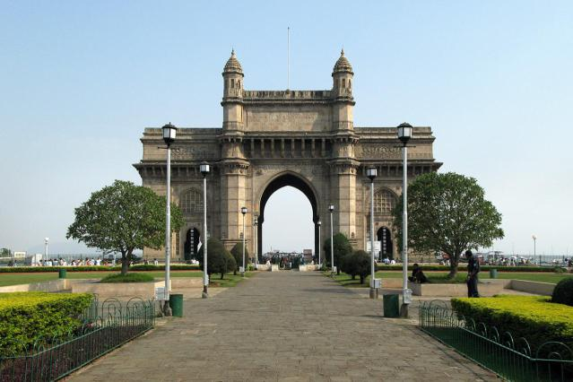
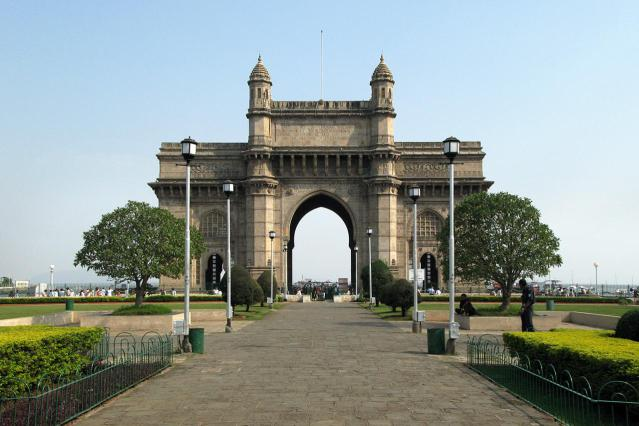
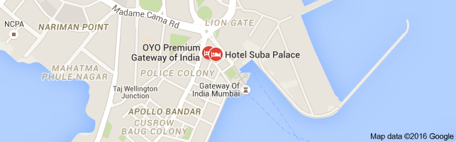
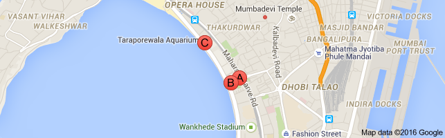

gateway of india
G A T E W A Y O F I N D I A
The Gateway of India is an emblematic landmark not only in Mumbai but in the entire country. Located on the southern part of the city, the gateway overlooks the splendid Arabian Sea. This magnificent edifice was constructed to memorialize King George V and Queen Mary's visit to India in 1911. It was designed by George Wittet and took around 13 years to complete the project. The monument was inaugurated on 4th December, 1924.
Flaunting flawless Indo-Saracenic architecture, this structure has been built in yellow basalt stone. Its archway is 26 metres high, which is joined with four turrets. A monument that speaks volumes about the political history of the country, Gateway of India is the perfect place to get acquainted with the spirited life of Mumbai and is a favourite among history buffs, tourists and photographers
LOCATION:
Apollo Bandar, Colaba, Mumbai, 400001, Maharashtra

 

HOTELS:

THE TAJ PALACE
Address:15/17 NF Road | Amrut Keslav Naik Marg, Near Apollo Bunder, Mumbai 400001, India
Phone:022 6665 3366
HOTEL SUBA PALACE
Address: Near Gateway of India | Near Gateway of India, Mumbai 400039, India
THE GORDON HOUSE HOTEL
Address: 5,Battery Street ,Apollo Bunder | Apollo Bunder, Colaba, Mumbai 400003, India
0.2 km from Gateway of India
BANKS/ATM:

KOTAK MAHINDRA BANK ATM
Address: Marine Line, Ticket Window down, Marine Drive Flyover, Marine Lines, Mumbai, Maharashtra 400 002
Phone:1800 102 6022
Punjab National Bank ATM
Address: Marine Drive, Indian Oil Petrol Pump, Marine Drive Flyower, Marine Lines, Mumbai, 400002
Phone:1800 180 2222
Axis Bank ATM
Address: Mumbai Police, Gymkhana, 473, NS Road, Marine Drive, Mumbai, Maharashtra 400002
Phone:1800 209 5577
HOSPITALS:
Bombay Hospital And Medical Research Centre
Bombay Hospital Trust, Road No 12, Marine Lines, Mumbai - 400020, Near Liberty Cinema
Phone:+(91)-22-22067676, 40511111